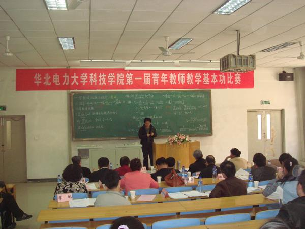

我院首届青年教师教学基本功比赛圆满落幕
[来源：本站 | 作者：郑乃嘉 | 日期：2011-04-13 22:45 ]
4月7日下午，我院首届青年教师教学基本功比赛决赛在第一阶梯教室举行。本次比赛由人事工作部和教学工作部联合主办，大学教学督导组组长陈基禄、院领导高强、刘洪才、宋玮及各系部教学主任、学院督导组老师等担任大赛评委，各系部教师到场观摩。
参加决赛的12名教师按抽签顺序依次登台。他们教态自然大方，板书整洁美观，讲解严谨生动，辅助教学元素运用得当，充分展现了我院青年教师的风采。经过评委会严格评议，基础学科部田景峰凭借出众表现获得一等奖，郭丰娟、高英获得二等奖，高慧颖、彭增伟、付晶晶获得三等奖。
740)this.width=740" border=undefined>
赛后，评委陈基禄老师对参赛教师的表现做了精彩点评，对我院青年教师的教学水平予以了认可和肯定。常务副院长高强为本届比赛做了总结发言。高院长强调，青年教师是我院师资队伍的主体，是学院提升教学质量、提高办学水平的中坚力量，希望广大青年教师能够以切实提高教学水平为目标，把饱满的热情投入到教学工作中，持之以恒，在教学第一线做出出色的成绩。高院长还表示，教学基本功大赛为青年教师们提供了展示和交流的平台，以后要形成传统，定期举办，为促进整体教学水平起到积极的推动作用。 （人事工作部、教学工作部）
责任编辑：Admin